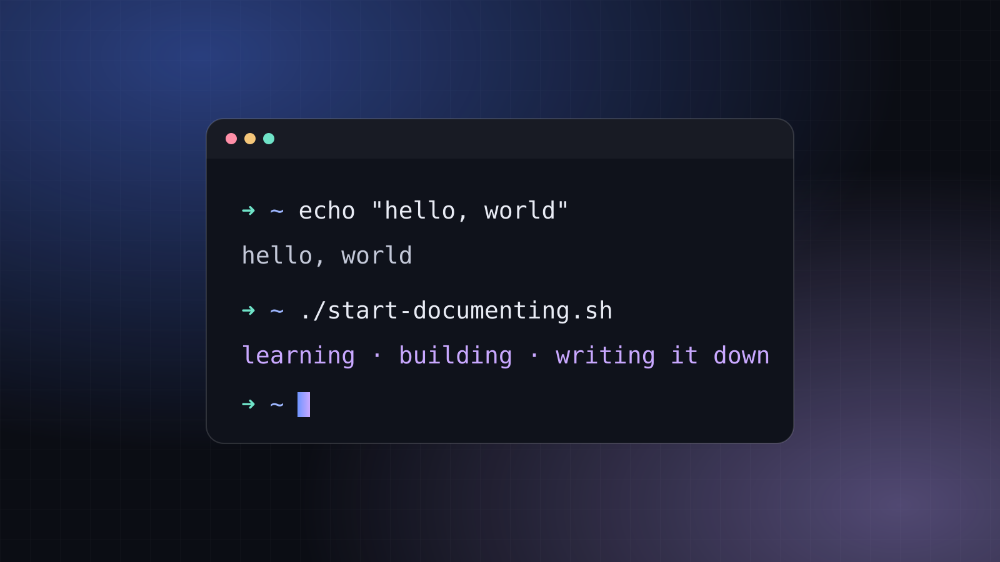

Hello, World: Why I Am Documenting My Tech Journey
I am a cybersecurity student who wants to become a systems or cloud engineer. This is where I write down what I learn, what I build, and what goes sideways.

Every programming tutorial starts the same way: you write a tiny program that prints hello, world, it works, and for one brief moment you feel like a genius. Then chapter two happens.
This post is my hello, world.
Who I am
I'm Johnice. I'm a cybersecurity student, and I want to become a systems or cloud engineer. I'm interested in the parts of technology most people never see: the networks that move data around, the Linux servers quietly running everything, the cloud infrastructure underneath the apps we use every day, and, more recently, AI agents and automation.
I'm not a senior engineer. I'm not a consultant. I'm someone who is genuinely curious about how all of this works and is putting in the time to learn it properly.
Why write it all down?
A few reasons, in no particular order:
- Writing is how I check that I actually understand something. If I can't explain DNS in plain English, I don't really know DNS. I just know the flashcard.
- Future me will forget. Future me will absolutely need to remember which command fixed that thing, and future me deserves notes.
- Learning in public keeps me honest. It's harder to quietly abandon a project when there's a page on the internet that says In Progress.
- Someone else is a few steps behind me. When I was getting started, the most helpful posts weren't written by experts. They were written by people who had just figured something out and still remembered what was confusing about it.
What you'll find here
The site is split into three sections:
- The Tech Diaries: the personal side. School, certification studying, labs, career questions, and honest lessons learned.
- AI & Automation: building AI agents, automating repetitive tasks, and testing AI tools to see what they're actually good for.
- Systems, Networks & Cloud: hands-on notes about Linux, networking, servers, virtual machines, cloud and security fundamentals.
There's also a Projects page. Every project there is labeled Planned, In Progress or Completed, because I'd rather show you an honest work in progress than a polished thing that doesn't exist.
No invented credentials, no fake projects, no pretending a lab went smoothly when it took three tries. If I get something wrong, I want to know. Corrections are welcome on the contact page.
What this is not
This isn't a "10 things every engineer must know" kind of blog. I don't know ten things every engineer must know. I'm working on it. What I can offer is a real account of what learning this stuff looks like: the progress, the confusion, the moment something finally clicks, and the occasional afternoon lost to a typo.
Where I hope this goes
Today, this site documents what I'm learning and showcases what I'm building. Eventually I'd love for it to hold real tutorials, more advanced projects, and maybe a few AI-powered tools that are actually useful. The site is designed to grow as I do.
If you're a recruiter: hi, thanks for stopping by, and my About page has the summary. If you're a fellow student: welcome, we're in this together. If you're an experienced engineer who just spotted a mistake: please tell me, kindly.
$ echo "Let's see where this goes."
Let's see where this goes.